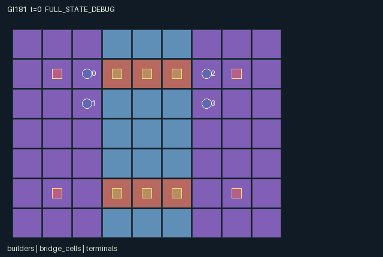

GI181 / SPATIAL
桥梁契约
建造者拥有互补的木材与螺栓，先后投入才能修通多格桥梁；占位、磨损与修理影响后续通行。
Original saved demonstration
Recorded native state, often authored scripts or interventions; information scope and failures are preserved in the original provenance. This is a saved demonstration, not live browser play.

Release verification episode
Untrained uniform legal actions. Actual JAX state sampled along the full original episode; full-state debug camera. No human performance or learning claim.

Run this game
crucibles play --game 181
Start Python locally, then open the address printed by the terminal. Installation, multiplayer, takeover and keyboard controls →
Objective, rewards & ending
Exact task contract
{
"objective": "Build and maintain real capacity-one multi-cell crossings to deliver each parcel across separated islands; either north or south terminal pays a private value.",
"natural_termination": "All four parcels delivered, otherwise H=120 truncation. Stranded builders and incomplete routes remain valid outcomes.",
"interaction": "Different builders initially own complementary scarce materials. A single contribution can unlock a peer step later; sharing, repair, route diversion, occupation and wear change later connectivity for everyone.",
"observation_access": "All geometry, material stock, construction components, integrity, occupancy, repair consumption and delivery flags are public. Each role alone sees its two private terminal values. The scene does not bind private value attributes; private_visible is the identity mask."
}Declared per-step reward bounds: -0.1 to 5.8. Observability: partially_observable.
Rules
- Four builders start with complementary finite wood and bolts on opposite islands. Two distinct three-cell crossing routes exist at y=1 and y=5.
- A cell requires one wood and one bolts, committed from the cell or a cardinal neighbor. Same-material contention awards the lowest agent id; complementary contributions combine simultaneously.
- Newly complete cells receive integrity twelve. Old complete cells with positive integrity admit one builder per cell; old occupied destinations block swaps.
- Every entry causes one wear and every fourth transition causes one decay. Zero integrity blocks new entry but never moves or removes an existing occupant.
- Repair consumes one wood and one bolts, restores six integrity up to twelve, and may restore a worn-out occupied cell. Adjacent peers may transfer one material.
- Private destination values permit different route priorities. AUTHOR SOURCE ONLY: no connectivity trace, successful crossing, animation, causality test or learning result has been executed.
Original mechanism document (historical status wording retained)
# Bridge Pact Status: AUTHORED_NOT_EXECUTED. Original source attempt 00 in the train-only prospective stream. The four supported controlled-role counts and dimensions belong to this batch interface, not a universal game quota. Native A/O/U/H = 4/137/11/120. Source SHA-256: `41fd76cd8f3a07938911f7529ee4b6f4591ba9f5f43b175c780f754426fdf19e`. ## Implemented rules and transition order Two islands occupy x=0..2 and x=6..8 in a 9x7 world. Potential crossings each contain three actual cells at x=3,4,5 on y=1 or y=5. Other water is impassable. Four builders start at (2,1),(2,2),(6,1),(6,2) with [wood,bolts] inventories [4,0],[0,4],[0,4],[4,0]. Each resource totals eight. A contribution reaches the current or a cardinal-adjacent bridge cell with that component missing. The lowest bridge index is targeted. For simultaneous requests for the same material and cell, the lowest agent id contributes and losers retain their material. Complementary wood and bolts can arrive together. Components persist permanently; first completion sets integrity twelve. Movement permissions use old geometry. Solid land and completed positive-health bridge cells admit entry only if the target was empty. Same empty target contention goes to lowest agent id; swaps and following into an old occupied cell are blocked. A single bridge cell has capacity one. Connectivity arises from individual adjacent steps across all three cells, with no portal or teleport. Every actual entry causes one integrity wear. Every fourth next clock causes one decay on every completed cell, including newly completed ones on that transition. Integrity bottoms at zero. Existing occupants remain on a worn-out cell without displacement or damage; they may wait, repair, or exit to an otherwise legal neighbor. Only new entry is prohibited. A stranded actor is retained until ordinary termination. Repair selects the reachable completed cell with least old integrity, ties by bridge index. It consumes one wood and one bolts, restores six up to twelve, and can restore an occupied zero-integrity cell. Concurrent repairs all consume their materials even if the cap wastes restoration. Materials installed in construction are not returned when integrity is zero. Giving transfers one material to the old-adjacent peer with least old stock of that material, ties by id. Same-step gifts do not satisfy old-state action permissions. For each resource, carried stock plus installed components plus cumulative repair_used remains eight by the source equations. Ordering is old-mask movement, same-component contention and simultaneous complementary contributions, repair, old-adjacency handoff, entry wear and periodic decay, then delivery. A new or repaired cell cannot legalize a move that was masked out in old state. Each builder has independently sampled private values 2..5 for north/south opposing terminals. Own delivery pays that value; every role receives 0.2 per current delivery. An accepted contribution costs 0.02, repair costs 0.04 and movement costs 0.005. Delivered builders remain able to help. All deliveries terminate; H=120 truncates any incomplete, stranded or undecided case. ## Action and observation permissions Movement targets must be old-empty ground or a complete positive-health bridge cell; common empty targets go to lowest agent id. Construction reaches own/cardinal-adjacent cells and needs the missing material. Giving requires positive stock and an old adjacent peer. Repair needs both resources and a reachable completed cell below maximum integrity. Delivery requires an undelivered parcel at an opposing terminal. Old live bridges govern movement; newly built cells become available next transition. A zero-health occupied cell keeps its occupant, allows waiting/repair/valid exit and rejects new entry. Joint terminal allows only wait; invalid actions become wait. All geometry, material stock, construction components, integrity, occupancy, repair consumption and delivery flags are public. Each role alone sees its two private terminal values. The scene does not bind private value attributes; private_visible is the identity mask. The manifest covers every returned flat observation column and every literal reset-state key. All state leaves are declared as fixed-shape bool/int32/float32. Signed small integer fields use int32 losslessly. The uint32 reset key is trusted provenance and is not copied into state; its literal private-value distribution is preserved. No map or entity is made public just to render it. Private values are omitted from entity attributes and available only through the self observation fields. Local dust events are not broadcast as global scene events. Declared observation bounds are [0,1]; reward bounds are [-0.1,5.8]. These are interface bounds, not performance gates, and have not been tested with numerical trajectories. ## Partner-dependent strategy hypotheses Builders can consolidate complementary stocks on one route, work from both ends and meet at the middle, or divide stock between the two alternative crossings. An early one-material commitment can induce or fail to induce a peer matching contribution. Transporting material and yielding occupied cells can let a better-positioned peer complete a route. Spending scarce complements on repair protects everyone using an existing crossing but competes directly with opening another route. A builder can free ride on others construction, block a narrow cell, prefer a privately valuable destination, or cooperate for the shared delivery term. These are partner-dependent possibilities in the rules, not verified strategic quality or learning. ## Original scripts and paired intervention Literal seed 1816323 was chosen without calling reset or searching seeds. `playthrough.json` contains fixed integer joint-action scripts and a one-component paired intervention. Their intended events and legality are source reasoning only. Only builder 0 initial wood commitment differs. Builder 1 later makes the same bolts commitment from the same bank cell. The source predicts complete versus partial first-cell construction and a different east-entry permission for builder 1; no movement into an illegal branch is scripted. This is an unexecuted delayed opportunity hypothesis. A paired suffix may be compared as actual observations, native state and legal masks only after a separately authorized frozen-source replay. This package contains no trace, observed effect magnitude, acceptance score or proof of success. ## Terminal and rendering boundary A nonterminal raw call advances t exactly once. Natural completion takes priority at H; truncated = (next_t >= H) and not terminated. done equals terminated or truncated. An already-done raw call preserves all state, observations, clock and original causes and returns zero reward with all role dones true. The raw kernel never resets; outer autoreset belongs to trusted integration. The declarative scene binds actual native entity positions, active/visibility masks, public attributes and event levels to exact source/manifest hashes. It supplies a usable state mapping for later rendering, not recorded animation. Tether midpoints, dust cells, rights and bridge components derive from actual causal state where present. A privileged full-state view must be labelled separately from each role view. The array interface is GeneratedEnv reset/observe/legal_actions/raw_step. A JaxMARL agent-keyed adapter with __all__, real trajectory capture, animation playback/pause/step, R0 and any learning work remain independent integration responsibilities; none is silently added to these seven source-package files. ## Literal source evidence - `candidate.py:32`: `'bridge_pos': jnp.array([[3, 1], [4, 1], [5, 1], [3, 5], [4, 5], [5, 5]], jnp.int32),` - `candidate.py:62`: `move = jnp.all(target == clipped, axis=2) & ~occupied & ((tile == 0) | bridge_ok)` - `candidate.py:98`: `wood_lost = jnp.any((wood_target[:, None] == wood_target[None, :]) & wants_wood[None, :] & lower, axis=1)` - `candidate.py:102`: `contributed = jnp.stack([put_wood, put_bolt], axis=1).astype(jnp.int32)` - `candidate.py:106`: `completed_now = complete & ~((s['wood'] == 1) & (s['bolts'] == 1))` - `candidate.py:112`: `repair_count = jnp.sum(jax.nn.one_hot(repair_target, 6, dtype=jnp.int32) * repaired[:, None], axis=0)` - `candidate.py:116`: `materials = s['materials'] - contributed - repaired[:, None].astype(jnp.int32)` - `candidate.py:124`: `wear = jnp.sum(entry, axis=0).astype(jnp.int32)` - `candidate.py:126`: `decay = ((jnp.mod(t, 4) == 0) & complete).astype(jnp.int32)` - `candidate.py:127`: `health = jnp.maximum(health - wear - decay, 0)` - `candidate.py:133`: `reward = value + 0.2 * jnp.sum(delivered_now) - 0.02 * jnp.sum(contributed, axis=1)` - `candidate.py:159`: `n, reward = jax.lax.cond(state['done'],` Method locations from stdlib AST only: refresh 12-14, reset 16-50, legal_actions 52-76, advance 78-144, observe 146-156, raw_step 158-163. ## Allowed reference use and source-only checks The supplied JaxMARL README was read for its parallel agent-keyed API and __all__ convention. The supplied PureJaxRL README was read to distinguish end-to-end algorithm implementations from a game library. No upstream implementation or game rules were copied. The Pgx README, Craftax README and Craftax PPO-RNN baseline were byte-read and hashed for integrity only; their contents were not semantically used. Craftax game mechanics, Pgx board APIs and PureJaxRL algorithm code are not claimed as implementations of these games. All exact paths, bytes, hashes and actual use are recorded in author_input_freeze.json. The supplied AST whitelist accepted this final source, and supplied manifest/scene validators accepted data-only metadata. Class constants, literal reset-key inventory, action vector dimensions/ranges, one-component branch changes and SHA links were checked without importing or executing candidate code. These checks do not establish runtime shape/dtype correctness, eager/JIT/vmap parity, action-mask validity along trajectories, conservation, causality, solvability, strategic richness, non-isomorphism, animation, training, adaptation or transfer. Zero, negative, failed and indeterminate future results remain admissible.
Commands
Roles & abilities
agent_0 west builder initially carrying wood
agent_1 west builder initially carrying bolts
agent_2 east builder initially carrying bolts
agent_3 east builder initially carrying wood
Observation permissions
Training receives only the original observation rows. Role cameras use declared visibility; debug cameras are explicitly marked. Local benchmark records log debug exposure and role takeover history.
Exact observation layout
[
{
"slice": [
0,
2
],
"meaning": "Own private north/south delivery values/5",
"visibility": "self"
},
{
"slice": [
2,
3
],
"meaning": "Clock/120",
"visibility": "public"
},
{
"slice": [
3,
11
],
"meaning": "Four builder x/8,y/6 pairs",
"visibility": "public"
},
{
"slice": [
11,
19
],
"meaning": "Agent-major [wood,bolts] inventory/8",
"visibility": "public"
},
{
"slice": [
19,
23
],
"meaning": "Parcel delivered flags",
"visibility": "public"
},
{
"slice": [
23,
35
],
"meaning": "Six ordered bridge-cell x/8,y/6 pairs",
"visibility": "public"
},
{
"slice": [
35,
41
],
"meaning": "Persistent wood bits",
"visibility": "public"
},
{
"slice": [
41,
47
],
"meaning": "Persistent bolts bits",
"visibility": "public"
},
{
"slice": [
47,
53
],
"meaning": "Bridge integrity/12",
"visibility": "public"
},
{
"slice": [
53,
59
],
"meaning": "Bridge occupancy 0 or 1",
"visibility": "public"
},
{
"slice": [
59,
67
],
"meaning": "Four terminal x/8,y/6 pairs",
"visibility": "public"
},
{
"slice": [
67,
130
],
"meaning": "Public y-major terrain values/2",
"visibility": "public"
},
{
"slice": [
130,
132
],
"meaning": "Cumulative wood,bolts repair consumption/8",
"visibility": "public"
},
{
"slice": [
132,
133
],
"meaning": "Joint done flag",
"visibility": "public"
},
{
"slice": [
133,
137
],
"meaning": "Own role identity one-hot",
"visibility": "self"
}
]Entity visibility & attributes
[
{
"id": "builders",
"kind": "agent",
"count": 4,
"position": [
"pos"
],
"active": [
"agent_active"
],
"visibility": [
"agent_visible"
],
"attributes": [
{
"state_path": [
"materials"
],
"meaning": "Owned [wood,bolts] stock",
"display": "number"
},
{
"state_path": [
"delivered"
],
"meaning": "Own parcel delivered",
"display": "flag"
}
]
},
{
"id": "bridge_cells",
"kind": "gate",
"count": 6,
"position": [
"bridge_pos"
],
"active": [
"bridge_active"
],
"visibility": [
"bridge_visible"
],
"attributes": [
{
"state_path": [
"wood"
],
"meaning": "Permanent wood commitment 0 or 1",
"display": "flag"
},
{
"state_path": [
"bolts"
],
"meaning": "Permanent bolts commitment 0 or 1",
"display": "flag"
},
{
"state_path": [
"health"
],
"meaning": "Current usable integrity",
"display": "bar"
},
{
"state_path": [
"bridge_occupancy"
],
"meaning": "Number of actual builders on this capacity-one cell",
"display": "number"
}
]
},
{
"id": "terminals",
"kind": "landmark",
"count": 4,
"position": [
"terminal_pos"
],
"active": [
"terminal_active"
],
"visibility": [
"terminal_visible"
],
"attributes": []
}
]Actual verification & provenance
Per-game execution receipt
{
"game": "gi181",
"status": "PASS",
"verification_revision": 2,
"source_sha256": "41fd76cd8f3a07938911f7529ee4b6f4591ba9f5f43b175c780f754426fdf19e",
"seed": 20261101,
"runtime": {
"jax": "0.4.38",
"numpy": "1.26.4",
"devices": [
"TFRT_CPU_0"
]
},
"dimensions": {
"num_agents": 4,
"observation_size": 137,
"num_actions": 11,
"max_steps": 120
},
"checks": {
"eager_reset": {
"status": "PASS",
"seconds": 1.3814201354980469
},
"observation_spaces_legal_masks": {
"status": "PASS",
"seconds": 2.461866617202759
},
"eager_step": {
"status": "PASS",
"seconds": 1.156010627746582
},
"jit_reset": {
"status": "PASS",
"seconds": 0.2645564079284668
},
"jit_step": {
"status": "PASS",
"seconds": 0.6148207187652588
},
"eager_jit_integer_parity_float_measurement": {
"status": "PASS",
"seconds": 0.0006837844848632812
},
"jit_vmap_reset": {
"status": "PASS",
"seconds": 0.4920542240142822
},
"jit_vmap_step": {
"status": "PASS",
"seconds": 1.290081262588501
},
"outer_autoreset_api": {
"status": "PASS",
"seconds": 1.3142788410186768
},
"full_original_horizon_episode_and_render": {
"status": "PASS",
"seconds": 1.5401997566223145
}
},
"human_scores": null,
"browser_controls": "PENDING",
"failures": [],
"elapsed_seconds": 11.411684513092041,
"float_parity_max_abs": 5.960464477539063e-08,
"numerical_parity": "UNDETERMINED_NONZERO_FLOAT_DIFFERENCE",
"raw_terminal_absorbing": "PASS",
"terminal_outer_reset": "PASS",
"episode_steps": 120,
"scripted_random_returns": [
-0.4999999888241291,
-0.4599999897181988,
-0.4549999898299575,
-0.5049999887123704
],
"terminal": true,
"demo_information": "FULL_STATE_DEBUG",
"demo_frames": 25,
"render_roles_checked": 4
}Chromium control verification
{
"game": "gi181",
"status": "PASS",
"human_scores": null,
"engineering": true,
"checks": [
"catalog_selected_and_real_native_reset",
"dom_queue_and_native_step",
"second_participant_ownership_and_native_joint_step",
"all_roles_individually_controllable_no_role_cap",
"explicit_debug_camera",
"release_to_pure_ai_without_reset"
],
"seconds": 3.574636220932007
}Original identity and file hashes
{
"id": 181,
"key": "gi181",
"title": "桥梁契约",
"summary": "建造者拥有互补的木材与螺栓，先后投入才能修通多格桥梁；占位、磨损与修理影响后续通行。",
"tags": [
"互补材料",
"建桥协作"
],
"family": "spatial",
"dimensions": {
"num_agents": 4,
"observation_size": 137,
"num_actions": 11,
"max_steps": 120
},
"source_sha256": "41fd76cd8f3a07938911f7529ee4b6f4591ba9f5f43b175c780f754426fdf19e",
"manifest_sha256": "ad5415f36e428bb1146b2b6d00fcc929b4b0dddabc0255cade53425cdcbfc419",
"files": [
{
"file": "candidate.py",
"sha256": "41fd76cd8f3a07938911f7529ee4b6f4591ba9f5f43b175c780f754426fdf19e",
"bytes": 10406,
"origin": "work/exp_2/game_incubator_v3/community_games222_225_visualization_root222_v1/native154_candidate/registry/v2/games/game-v3-00181/candidate.py"
},
{
"file": "manifest.json",
"sha256": "ad5415f36e428bb1146b2b6d00fcc929b4b0dddabc0255cade53425cdcbfc419",
"bytes": 13814,
"origin": "work/exp_2/game_incubator_v3/community_games222_225_visualization_root222_v1/native154_candidate/registry/v2/games/game-v3-00181/manifest.json"
},
{
"file": "scene.json",
"sha256": "c130e93b2948db61baf3dc4093bc5e652fa144ecadef355051da9ff0d46dd83c",
"bytes": 7018,
"origin": "work/exp_2/game_incubator_v3/community_games222_225_visualization_root222_v1/native154_candidate/registry/v2/games/game-v3-00181/scene.json"
},
{
"file": "mechanism.md",
"sha256": "79c070e75428b22875b07e297c8c5f8911815ae21cf4a66229f888ae9c4faa76",
"bytes": 10296,
"origin": "work/exp_2/game_incubator_v3/sources/game-v3-00181/attempt_00/mechanism.md"
},
{
"file": "playthrough.json",
"sha256": "eae5760b317f5b6807645d0923a1c0ebbf79b2e2c78072dc2d389da36888f013",
"bytes": 4497,
"origin": "work/exp_2/game_incubator_v3/sources/game-v3-00181/attempt_00/playthrough.json"
}
],
"original_status": "NATIVE154_REFERENCE",
"original_saved_replay": true,
"release_validation": "PASS",
"human_scores": null,
"browser_validation": "PASS"
}